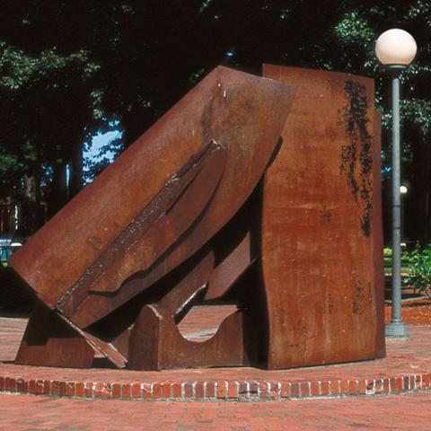

Di Suvero‘s monumental sculptures are typically
constructed from industrial I-beams, welded or
bolted together. Still they appear to soar
lightly above the ground. Di Suvero has been
called an Abstract Expressionist for the way he
draws with steel beams in space. In what the
artist has described as a metronomic sculpture,
For Handel was created specifically for the
Performing Arts Plaza and dedicated to the 18th
Century composer George Frederic Handel.

India
Anthony Caro, 1976.
Steel, rusted and varnished. 7 3/4' h. x 9 3/4 ' w.
India presents a complex composition and varied views,
with a strong front, akin to the vertical plane of a
door, and dynamic structural relations of organic
slabs layered diagonally against large planes. The
process of machining this metal through its various
treatments is evident. In its finished form, this
sculpture expresses these materials as they appear at
various stages of the metal forming process, ranging
from lumps of steel to flattened slabs and sheet metal.